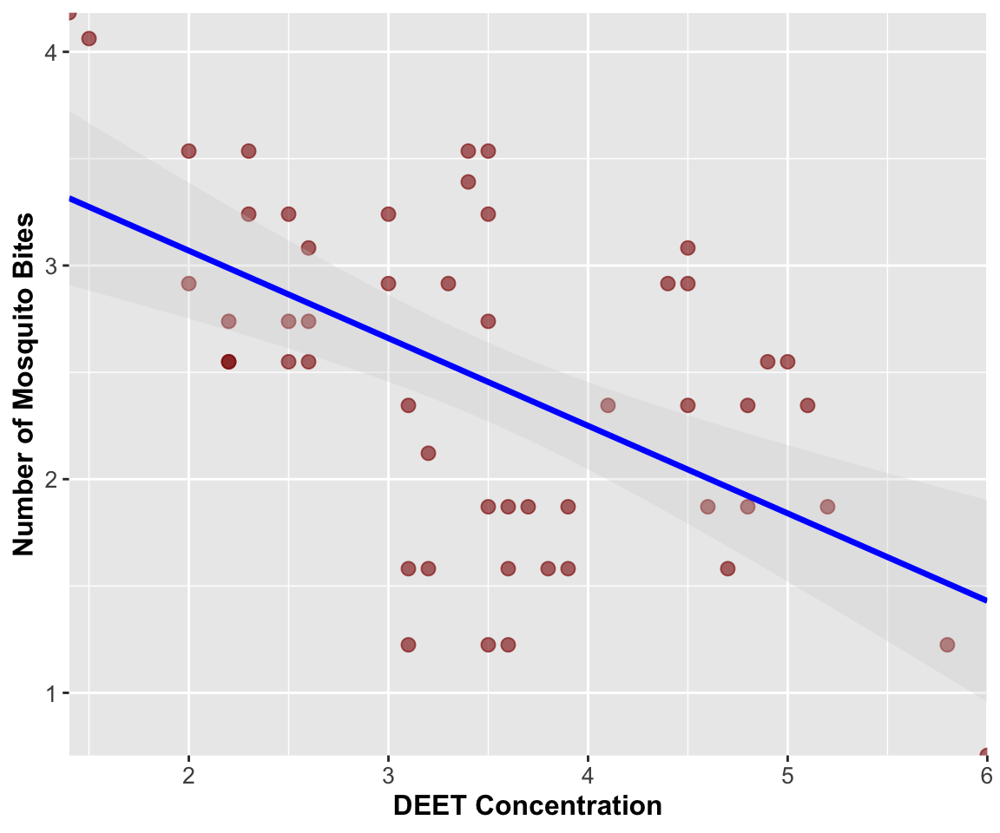

Linear Regression Analysis - DEET Concentration and Mosquito Bites
Author
Bill Perry
Introduction to Linear Regression Analysis
Background and Theory
Linear regression is used to model the relationship between a continuous response variable (Y) and a predictor variable (X). In this analysis, we will examine the relationship between DEET concentration in mosquito repellent and the number of mosquito bites received during exposure trials.
Data from - Golenda, C.F., V.B. Solberg, R. Burge, J.M. Gambel, and R.A. Wirtz. 1999. Gender-related efficacy difference to an extended duration formulation of topical N,N-diethyl-m-toluamide (DEET). American Journal of Tropical Medicine and Hygiene 60: 654-657.
NoteThe DEET Study Background
This dataset examines the effectiveness of DEET (N,N-diethyl-meta-toluamide) as a mosquito repellent:
Research Question: Does higher DEET concentration reduce mosquito bites?
Study Design: Controlled experiment with different DEET concentrations
Measurement: Number of mosquito bites per standardized exposure period
DEET is the most effective mosquito repellent available and understanding the dose-response relationship is important for public health recommendations.
Linear regression makes the following assumptions about the relationship:
\[Y = \alpha + \beta X + \varepsilon\]
Where:
\(Y\) is the response variable (number of mosquito bites)
\(X\) is the predictor variable (DEET concentration)
\(\alpha\) (alpha) is the intercept (expected bites when DEET = 0)
\(\beta\) (beta) is the slope (change in bites per unit change in DEET concentration)
\(\varepsilon\) (epsilon) is the error term (random deviation from the line)
The sample regression equation is:
\[\hat{Y} = a + bX\]
Where:
\(\hat{Y}\) is the predicted number of bites
\(a\) is the estimate of α (intercept)
\(b\) is the estimate of β (slope)
Method of Least Squares
The regression line is fitted using the method of least squares, which minimizes the sum of squared vertical distances (residuals) between observed and predicted Y values:
── Conflicts ────────────────────────────────────────── tidyverse_conflicts() ──
✖ dplyr::filter() masks stats::filter()
✖ dplyr::lag() masks stats::lag()
✖ dplyr::recode() masks car::recode()
✖ purrr::some() masks car::some()
ℹ Use the conflicted package (<http://conflicted.r-lib.org/>) to force all conflicts to become errors
# Load the DEET mosquito bite datadeet_df <-read_csv("data/chap17q30DEETMosquiteBites.csv")
Rows: 52 Columns: 2
── Column specification ────────────────────────────────────────────────────────
Delimiter: ","
dbl (2): dose, bites
ℹ Use `spec()` to retrieve the full column specification for this data.
ℹ Specify the column types or set `show_col_types = FALSE` to quiet this message.
R²: Proportion of variation in mosquito bites explained by DEET concentration
Making Predictions
# Example predictions for different DEET concentrationsnew_doses <-data.frame(dose =c(2.0, 3.5, 5.0))predicted_bites <-predict(deet_model, new_doses)predicted_bites
1 2 3
3.069433 2.454741 1.840050
# Predictions with confidence intervalspredict(deet_model, new_doses, interval ="confidence")
Statistical Analysis: We used simple linear regression to examine the relationship between DEET concentration and the number of mosquito bites received during standardized exposure trials. Prior to analysis, we examined the data for outliers and tested the assumptions of linearity, independence, homoscedasticity, and normality of residuals using diagnostic plots and formal statistical tests (Shapiro-Wilk test for normality, Breusch-Pagan test for homoscedasticity). The regression model was fitted using the method of least squares, and model significance was evaluated using ANOVA. Statistical significance was set at α = 0.05. All analyses were conducted in R (version X.X.X).
Results Section (for Publication)
There was a significant negative relationship between DEET concentration and the number of mosquito bites received (F(1,50) = [F-value], p < 0.001, R² = [R² value]). The regression equation was: Number of Bites = [intercept] + [slope] × DEET Concentration. For every one-unit increase in DEET concentration, the number of mosquito bites decreased by [absolute slope value] bites (95% CI: [lower bound] to [upper bound]). The model explained [R² × 100]% of the variation in mosquito bites, indicating that DEET concentration is a strong predictor of repellent effectiveness.
Publication Quality Figure
# Create publication-quality figurepublication_plot <- deet_df %>%ggplot(aes(x = dose, y = bites)) +geom_point(alpha =0.6, size =2.5, color ="darkred") +geom_smooth(method ="lm", se =TRUE, color ="blue", fill ="lightgray", alpha =0.3, linewidth =1.2) +labs(x ="DEET Concentration",y ="Number of Mosquito Bites" ) +theme(axis.title =element_text(size =12, face ="bold"),axis.text =element_text(size =10),plot.caption =element_text(size =10, hjust =0),plot.caption.position ="plot" ) +coord_cartesian(expand =FALSE)publication_plot

Addendum: Extracting Residuals and Model Components for Future Analysis
Handling Missing Values and Creating Analysis-Ready Datasets
After completing a regression analysis, you may want to extract residuals, fitted values, and other model components for further analysis. This is particularly important when your original dataset contains missing values, as the regression model will only use complete cases.
Understanding the Data Used in the Model
# Check for missing values in the original datasetsum(is.na(deet_df$dose))
[1] 0
sum(is.na(deet_df$bites))
[1] 0
# See how many observations were actually used in the modelnobs(deet_model)
[1] 52
nrow(deet_df)
[1] 52
TipWhy Extract Residuals?
Residual analysis helps identify:
Outliers in the mosquito bite data
Patterns that suggest model violations
Influential points that disproportionately affect the model
Unusual DEET concentrations or bite counts that warrant investigation
Method: Extracting Residuals with Missing Value Handling
# Simplest approach - let R handle the row matchingaugmented_data <- deet_dfaugmented_data[names(fitted(deet_model)), c("fitted_values", "residuals", "std_residuals", "student_residuals", "leverage", "cooks_d")] <-data.frame(fitted_values =fitted(deet_model),residuals =residuals(deet_model), std_residuals =rstandard(deet_model),student_residuals =rstudent(deet_model),leverage =hatvalues(deet_model),cooks_d =cooks.distance(deet_model) )# View the structurehead(augmented_data)
# Save the augmented dataset for future analyseswrite_csv(augmented_data, "deet_regression_with_diagnostics.csv")# Save summary statisticsmodel_summary <-data.frame(parameter =c("intercept", "slope", "r_squared", "adj_r_squared", "residual_se", "f_statistic", "p_value"),value =c(coef(deet_model)[1],coef(deet_model)[2], summary(deet_model)$r.squared,summary(deet_model)$adj.r.squared,summary(deet_model)$sigma,summary(deet_model)$fstatistic[1],pf(summary(deet_model)$fstatistic[1], summary(deet_model)$fstatistic[2], summary(deet_model)$fstatistic[3], lower.tail =FALSE) ))write_csv(model_summary, "deet_model_summary.csv")
Future Analysis Applications
This residual analysis framework enables:
1. Model Validation and Quality Control
Understanding which observations don’t fit the model well can reveal: - Individual variation in mosquito susceptibility - Measurement errors in bite counts or DEET concentrations - Non-linear relationships at extreme DEET concentrations
2. Biological Insights
Residual patterns might indicate: - Ceiling effects: Very high DEET concentrations may not provide additional protection - Threshold effects: Minimum DEET concentration needed for effectiveness - Individual variation: Some people may be more/less susceptible to mosquito bites
3. Study Design Improvements
Residual analysis can guide future experiments: - Identify optimal DEET concentration ranges to test - Determine sample sizes needed for adequate power - Suggest additional variables to measure (skin type, environmental conditions, etc.)
Summary and Conclusions
The linear regression analysis successfully demonstrated the effectiveness of DEET as a mosquito repellent, with higher concentrations significantly reducing the number of mosquito bites. The model met most regression assumptions, and residual analysis confirmed the quality of the relationship while identifying potential areas for further investigation.
Key findings: - Significant negative relationship: DEET concentration reduces mosquito bites - Strong explanatory power: Model explains substantial variation in bite numbers - Linear relationship: Simple linear model appears appropriate - Practical significance: Results have clear implications for repellent recommendations
Model limitations: - Individual variation in susceptibility not accounted for - Environmental conditions (temperature, humidity) not considered - Potential non-linear effects at very high concentrations not explored - Count data might be better modeled with Poisson regression